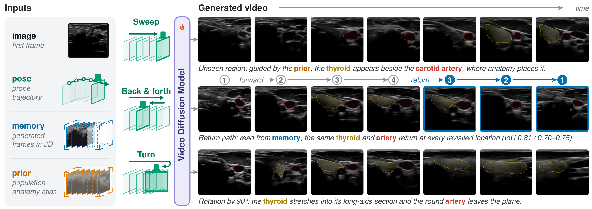

Beyond Pose Control: Anatomically Consistent Ultrasound Video Generation
Pose
Pose-following
Memory
Revisit-consistent
Prior
Anatomy-aware
Data
A real hand-held sweep, compounded in 3D

Method
01 — Results
Baseline Comparison
02 — Pose following
Shift the probe, the anatomy moves accordingly
03 — Ablation
What each component adds
04 — Application
Better than compounding
Citation
BibTeX
@misc{zhou2026beyondpose,
title = {Beyond Pose Control: Anatomically Consistent Ultrasound Video Generation},
author = {Zhou, Yue and Han, Fangxu and Wang, Tony Danjun and Navab, Nassir and Bi, Yuan},
year = {2026}
}